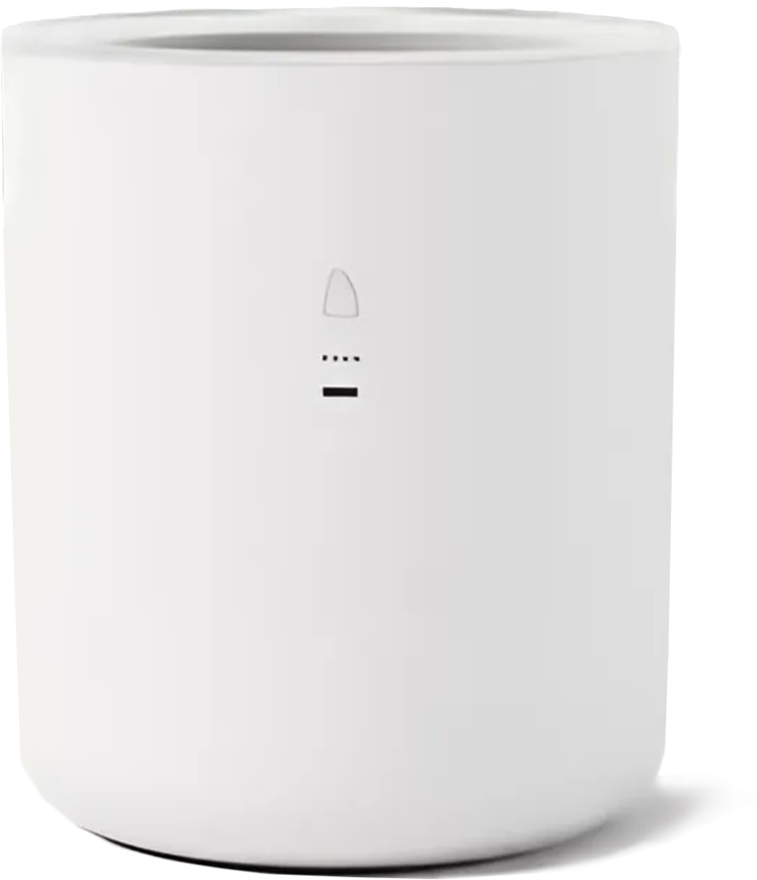
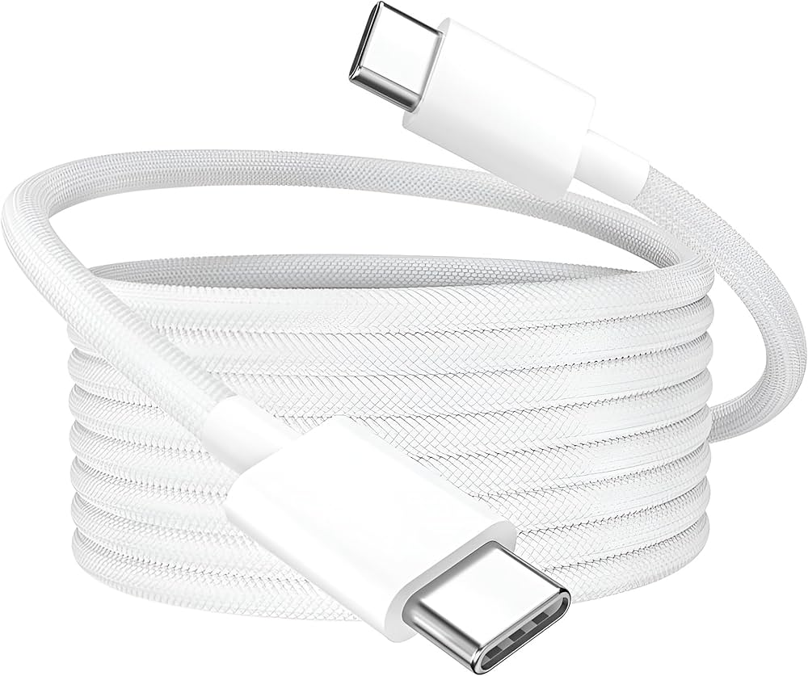
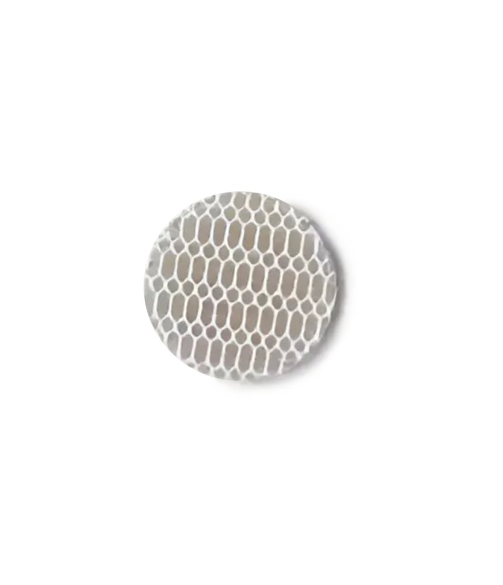
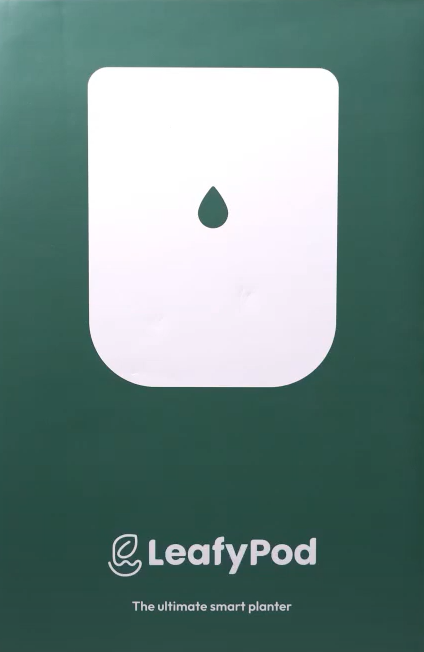
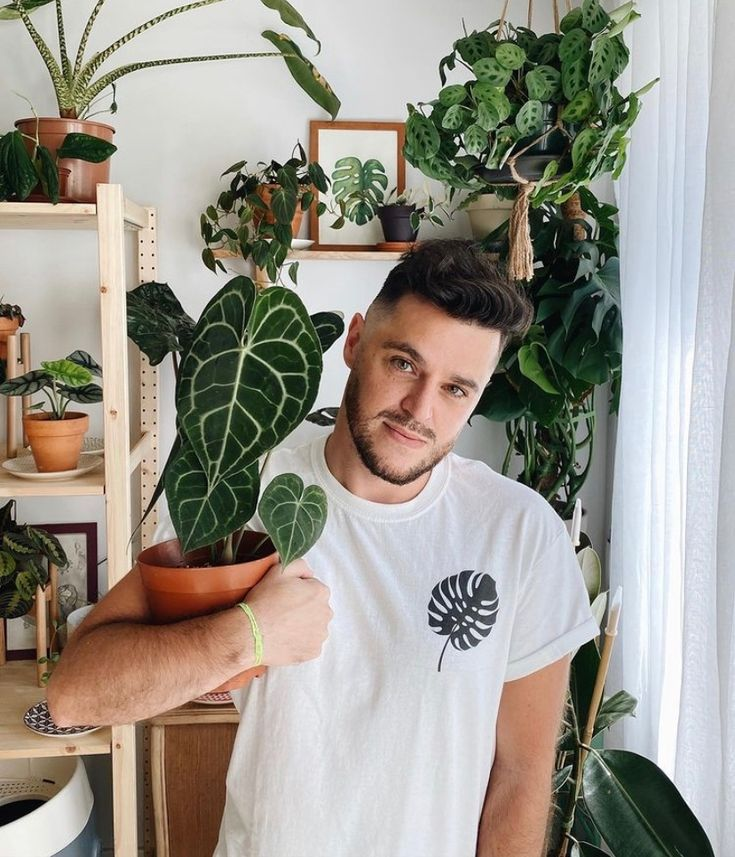

Зволоження ґрунту
Полив динамічно регулюється, щоб ваші рослини залишалися настільки вологими або сухими, наскільки вони повинні бути
Полив динамічно регулюється, щоб ваші рослини залишалися настільки вологими або сухими, наскільки вони повинні бути
Отримуйте індивідуальні рекомендації щодо освітлення, навіть якщо ви не спостерігаєте за своєю рослиною так уважно, як ми
Вбудовані датчики відстежують температуру 24/7, тож ви будете попереджені про перші зимові нічні протяги, щоб перенести вашу улюблену рослину в тепліше місце!
Чи знаєте ви, що 20% різниця вологості між вашою спальнею та ванною може суттєво вплинути на процвітання вашого потосу? Отримуйте сповіщення в додатку!
Фільтри гарантують тривалу роботу насоса. Захищений від пошкодження водою
Стильний та інноваційний аксесуар гармоній впишеться до будь-якої оселі
LeafyPod продовжує працювати завдяки оновленню програм
Більше 3 місяців на одному заряді навіть при регулярному використанні
Води в резервуарі достатньо приблизно на 4 тижні
Упаковка виготовлена з матеріалів, які на 90+% підлягають переробці
Додаток дозволяє легко контролювати стан рослин і процес догляду прямо з вашого телефону.
Нагадування, коли рослині треба догляд.
Прості й зрозумілі звіти про стан рослин для покращення вашого догляду.
Режими поливу графік графіка на основі потреб рослини: полив створюється за низької вологості обгрунтовано, а AI оптимізує процес.





LeafyPod — ідеальне рішення для догляду за рослинами без зайвих турбот. Він самостійно контролює полив, освітлення і температуру, створюючи ідеальні умови. Ваші рослини завжди будуть доглянуті, навіть коли ви зайняті чи подорожуєте.

Це чудово підходить для новачків, які тільки починають вирішувати проблеми, з якими ми стикаємося як початківці доглядачі рослин, наприклад, коли потрібно поливати рослину, чи отримує вона достатньо світла, чи не занадто жарко або холодно у нашому домі.
Цей вазон також ідеально підходить для тих, хто подорожує і не хоче хвилюватися, як поливати рослини або в якому стані вони будуть, коли ви повернетеся додому. Завдяки цьому горщику, ваші рослини будуть доглянуті — усе в одному.